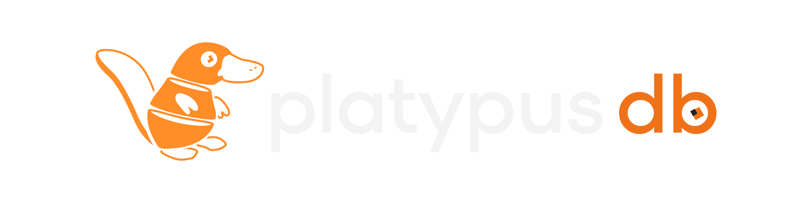
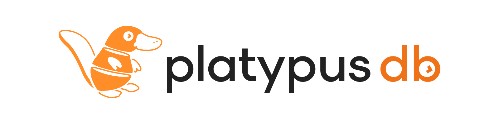

Un client SQL per i tuoi database e file di dati. Aggiungi una connessione per iniziare.
v0.9.0
Apri un file di datiCSV, Parquet, JSON o un foglio di calcolo, interrogati con DuckDB. Puoi anche trascinarlo sulla finestra.
Prova il database di esempioUn censimento di ornitorinchi in SQLite: tabelle collegate, una vista e qualche script, senza server.
Importa connessioniDa DBeaver, DataGrip o pgAdmin.
Recenti
PgShop devDEVieri
revenue_by_city.sql2 ore fa
cleanup_orders.sql3 giorni fa
Dkanalytics.duckdbuna settimana fa
Scorciatoie
Cerca ovunqueCtrl K
Nuova connessioneCtrl N
Nuovo editor SQLCtrl T
Esegui istruzioneCtrl ↵
Esegui scriptAlt X
Mostra o nascondi il navigatorCtrl B
Tutte le scorciatoieCtrl /
Nessuna connessione attiva